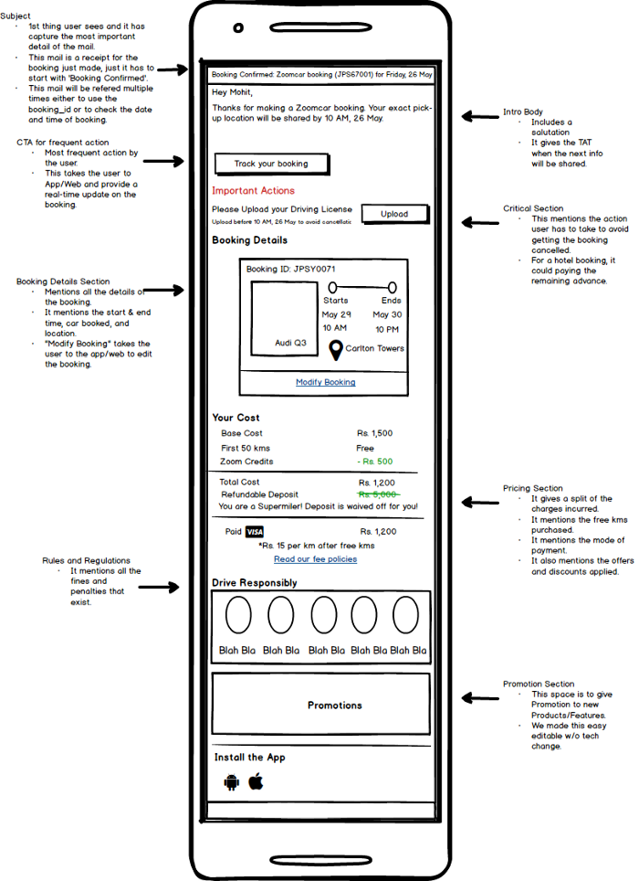

IoT for Connected Cars
How IoT can play a significant role in car rental business?
Business Continuity
To scale up fast and profitably, Zoomcar had to move away from the manned model where we had fleet guys to manage Pickup and Dropoff of the cars to business supported by Technology.
There are majorly 3 things that we need to run our business
*Access to the Car
*Distance Travelled
*Fuel Consumed/Refilled
Pickup and Dropoff process was manual where customers were given keys by the Fleet guys and distance traveled and fuel level was added to the booking by looking at the Dashboard of the car. We wanted to automate this process.
Subsystem Design
Accessibility Subsystem
1. We tap into car door’s wiring and through a relay actuate the door unlock and lock command.
2. This system provides Keyless Entry to our customers. A user can walk to the car and using his/her mobile phone, unlock and lock the car by the tap of a button.
3. This use-case is mission critical, hence included Bluetooth along with GPRS to send the signal to the car.
Discovery Subsystem
1. This system includes a GPS module and taps into blinkers and horn of the car.
2. The GPS in the car will assist the user to navigate to the car. For last-mile directions, the user would be able to make the horn and blinkers turn on. This action is useful when finding the car in a parking lot with hundreds of other cars.
OBD-II Subsystem
1. Post-2009, all the cars sold in India have an OBD port, made mandatory by the government to track emissions.
2. Off-the-shelf OBD-II products are commonly available in the market. We wanted to use this to get data from the CAN bus and get Odometer and Fuel reading to close the customer bookings.
Battery Health Monitoring Subsystem
1. We wanted to tap into the car battery to get the current health of the battery.
2. All the cars in Zoomcar fleet have identical 6-cell, 12V car battery. There are majorly three variables responsible for the health of the battery; Voltage, Current Draw, and Charge Left.
3. We wanted to get this data from the car battery to proactively manage battery breakdowns from happening.
Key Detection Subsystem
1. We wanted to confirm the presence of the key inside the car.
2. We explored a Bluetooth keychain that will trigger a command when the key is not inside the car. The Bluetooth connection sends an RSSI value, this RSSI value can be used to tell the proximity of the key from the car.
Audio Subsystem
1. All car have OEM fitted stereo system and car speakers, we wanted to tap into these car speakers.
2. We wanted to give our device a master control, to be able to switch over the audio playing from the stereo subsystem.
Hardware Blueprint
Communication Protocol
*We wanted a software infrastructure that is scalable, handle a high number of small data packets, and is secure.
*MQTT is designed as a lightweight machine to machine messaging protocol, primarily used for IoT devices, optimized for high-latency or unreliable networks. A bad network is pretty frequent in our use-case since cars are moving entity with fluctuating signal. It is a publish-subscribe messaging protocol.
*We implemented MQTT QoS 1 protocol. Quality of Service (QoS) 1.0 ensured that a message is delivered at least once. We implemented TSL over the MQTT for added security.
Hardware Testing
*There are total 4 systems which are involved here, the Device, the Security Gateway, the Zoomcar Cloud, and Zoomcar App and Systems. Each progression in phase involved an addition of one more system.
Isolation Testing
1. We performed the device fitment in the car to ensure the working of physical actions like Unlock/Lock, Immobilization, Horn and Blinker Actuation, Audio Play, Key Detection.
2. All the messages were sent to the device using MQTT lens with no interaction with Security Gateway or Zoomcar Cloud.
System Integration Testing
1. This stage involved interaction with Security Gateway and Zoomcar Cloud.
2. All the features were tested by simulating the production system. The device was assigned to a car, and booking context flowed down to the car.
User Acceptance Testing
1. We went live with 5 devices serving actual bookings. We are expecting the UAT to run for 1 month.
2. The target for UAT is to judge the performance of the device. This is a crucial step before releasing the Purchase Order for devices in bulk.
3. Performance evaluation for UAT is done by measuring Device Uptime, Connectivity Uptime, Lock/Unlock Success, Message Acknowledgment%, Message Delivery Rate.
Tools and Links
1. Testing: MQTT Lens. Effective for publishing and subcribing to current data stream. https://chrome.google.com/webstore/detail/mqttlens/hemojaaeigabkbcookmlgmdigohjobjm?hl=en
2. BLE Testing: https://play.google.com/store/apps/details?id=uk.co.alt236.btlescan
3. Hacking the Car: This is a helpful book to understand the electronics of the car. http://opengarages.org/handbook/ebook/
PS: PS: I have played the role of a Product Manager, this has been a 1-year long project involving numerous stakeholders from Designers, Embedded System Experts, Backend and Platform Developers, Quality Assurance Engineers.